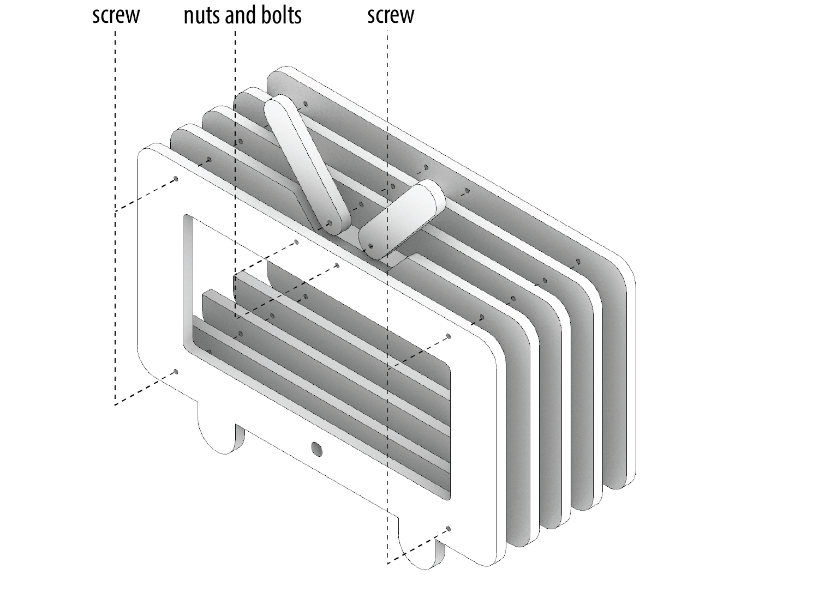

Total Time: 30 minutes
Quick Links
Lab 5: Let's Assemble a Phone Stand!
🦺 Introduction & Safety
(1-minute read)
Welcome to Lab 5! Today, we’ll learn how to assemble your laser-cut boards using handheld power tools. In this lab, you’ll build a phone stand designed to look like a mini TV with adjustable antennas. Through this hands-on activity, you’ll develop essential assembly skills and learn how to:
- ✅ Use a center punch to accurately mark holes
- ✅ Operate a power drill to create precise holes
- ✅ Use screws to fasten thicker components
- ✅ Assemble a hinge using nuts and bolts

🔨 Fabrication Quest of the Day
Today, you will create a TV shaped phone stand from the following:- (A) Laser-cut pieces of the phone stand
- (B) Power drill
- (C) Wood tape
- (D) Wood screws (x4)
- (E) Nuts and Bolts (x2)
- (F) Drill bit
- (G) Driver bits
Part 0: Plan Your Assembly
The diagram below outlines the plan to assemble your phone stand.
You will assemble a phone stand consisting of five wooden layers. These layers are secured using screws. You then use nuts and bolts to create two hinged, adjustable antennas for added functionality.
Assembly Process
- Align the Layers: Stack the wooden layers neatly and hold them securely in place using wood tape.
- Drill Holes: At the marked positions, drill holes for the screws and bolts.
- Secure the Layers: Fasten the layers together by inserting screws into the drilled holes.
- Attach the Antennas: Use nuts and bolts to assemble and secure the adjustable hinged antennas.
Part 1: Align Your Parts (5 minutes)
- Align and secure your parts with wood tape:
- To ensure stability while drilling, tape the laser-cut parts together with wood tape in the planned configuration. This temporary hold prevents movement and ensures precise drilling.
- Center punch the holes:
- Mark Drill Points: Use a center punch to create a small divot at each location where a hole is to be drilled. This helps guide the drill bit and ensures accurate hole placement.
Part (2): Drill A Pilot Hole
A pilot hole is a hole that we drill into the part to make sure the screwing process goes well when we drill in the screws.
- Drill a Pilot Hole:
- Pick a drill bit that is slightly thinner than the screws.
- Turn the front part of the drill to insert and secure the drill bit.
- Use a tag of painter tape to control the depth of your drilling.
- Drill into the center punch location while keeping your hand straight.
Part (3): Drill in the Screws
Now that we have made the pilot holes, we can drill in the screws.
- Drill in the screws:
- Change Drill Bit: Replace your drill bit with a screwdriver bit that fits your screws.
- Align and Screw: Position your drill in line with the screws and begin turning to secure them.
Part (4): Make a Hinge with Nuts and Bolts
Now that the layers are securely fastened and you’ve practiced using a drill, the next step is to attach the antenna using nuts and bolts. While the process is similar to drilling holes, it involves a slight modification.
In this step, you’ll create a hinge structure using the small antenna pieces. The nuts and bolts will serve as the hinge, allowing the antennas to move and adjust as needed. This approach ensures both functionality and durability for the structure.
- Attach the Nuts and Bolts:
- Mark Drill Points: Use a center punch to mark the spots where you want to drill holes on both the frame and the antenna pieces.
- Align Components: Position the frame and antenna parts together, ensuring the holes are aligned.
- Drill the Bolts: Use the drill to insert the bolts through the aligned holes.
- Secure with Nuts: Attach nuts to the bolts on the backside and tighten them using a wrench.
- Inspect your phone stand and try it out!
Checkoff 1
Show your instructor that you have made the phone stand.Discussion
Discuss with your final project teammate to outline your approach for assembling the actuated structures you plan to build. For example, how do you plan to join your lasercut parts together?